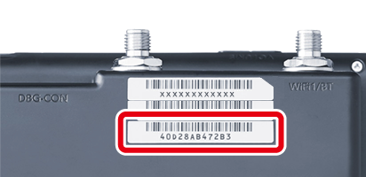
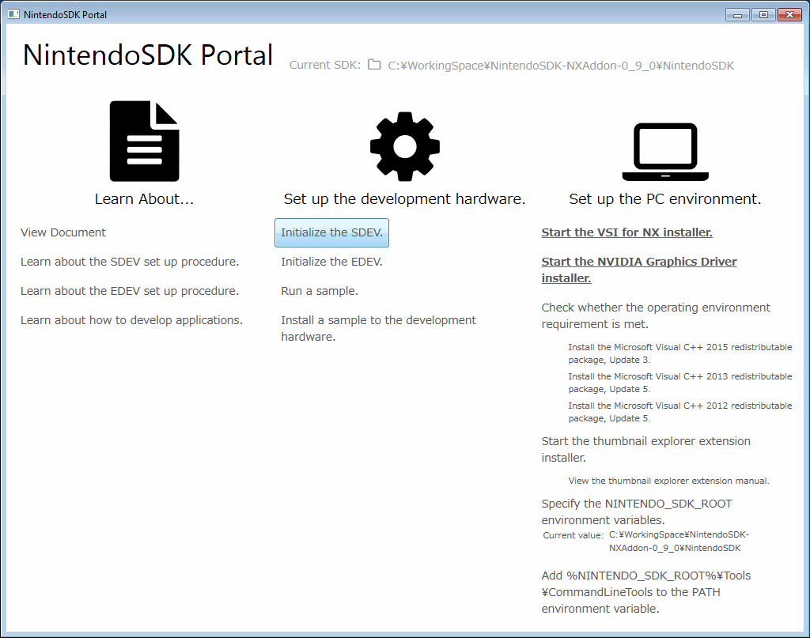
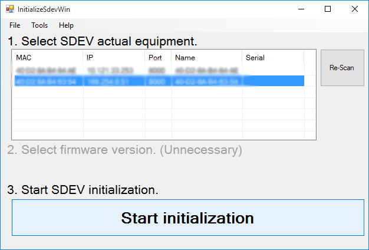
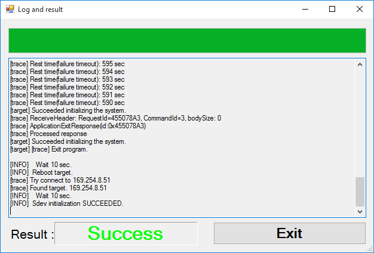

Initializing the SDEV
Initialize the SDEV firmware using a special tool. (This process usually takes about two minutes.)
Warnings about the Windows Firewall are displayed several times during this process. Select Allow access.
| Procedure | Operation |
|---|---|
| 1 |
Verify the value written on the sticker applied to the bottom of the SDEV. (This value represents the SDEV's serial number. It is XAW02121013686 in the following example.) Info
The verified value is used to select the SDEV in step 3.
Info
Note: For SDEV 1.6, verify the MAC address instead of the serial number. Verify the value written on the third sticker on the upper right of the back of the SDEV. (This value represents the SDEV MAC address. It is 40D28AB472B3 in the following example.)  |
| 2 |
Click the Initialize the SDEV button in the NintendoSDK Portal.  Info
To start the NintendoSDK Portal, run the |
| 3 |
Select the SDEV you want to initialize and begin initialization.  From the SDEV connection list under 1. Select SDEV actual equipment, use the mouse to select the address verified in step 1 for the Serial number information. In 2. Select firmware version, in the combo box, specify the firmware version you want to use. If there are no particular instructions for which version to use, use select default version. Next, to start SDEV initialization, in 3. Start SDEV initialization, click Start initialization. |
| 4 |
If Success is displayed at the lower left of the log window, click the Exit button to close the tool.  Info
Fan Operating Noise When the login window in step 4 is displayed, the cooling fan inside the SDEV starts operating. |

A sample has been built to check whether the SDEV was initialized correctly.
The following sample shows an execution method.
- To install, in the NintendoSDK Portal, click the Run VSI for NX installer button.
- After completing step 1, click the Execute Sample button.
A logo like the following will be displayed if the SDEV was initialized correctly and VSI for NX was installed correctly.

Note: This sample does not exit automatically. To exit the sample, select the connected target in Target Manager, and then from the shortcut menu that appears, select Reset.
Troubleshooting
- If the GUI application does not start in step 2, verify that the
NintendoSDK\Tools\CommandLineTools\InitializeSdevWin.exefile exists.
If this file does not exist, it might have been deleted by a malfunction in the anti-virus software. Check that the anti-virus software has not malfunctioned. - If the SDEV initialization fails, Fail is displayed instead of Success in step 4.
If that happens, try taking the following steps, repeating them a number of times. If the update still fails, contact the Support office.- Exit Target Manager if it is running.
- Target Manager might be in the task tray, so also check there.
- Insert and remove the Wii U console's AC adapter connected to the SDEV.
- Retry the procedure starting from step 2.
- Exit Target Manager if it is running.
- Re-initialization might fail when using the
InitializeSdevWin.batfile included with SDKs prior to NX Add-On 0.5.0 if you have already initialized the SDEV with an SDK from NX Add-On 0.5.0 or later.
When this happens, restore the SDEV and then resume the process from step 2. For information about restoring the SDEV, in the SDEV Operations Manual, see the Troubleshooting section on the SDEV Console Startup Fails page.
CONFIDENTIAL